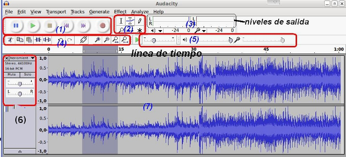

Edición de Audio y video
Introducción
En el presente tema trataremos de que el alumnado conozca las diversas herramientas que el programa de Edición Audacity nos brinda y que permiten la manipulación de ficheros de audio.
El uso de las herramientas permitirá al alumno la importación de formatos desde otros programas y su edición, utilizando diversas herramientas, para la producción de un fichero de audio propio.
Ejemplo: disponemos de un fichero (cuña de radio, podcast, fichero de música, grabación de sonido propia o ajena, etc.) y deseamos modificar algunas características del mismo (calidad, introducir efectos, ecos, silencios, adicionar voces, entre otras) utilizando las diversas herramientas que nos brinda el editor:
- conocer la línea de tiempo
- Uso de la herramienta envolvente, de dibujo, zoom, traslado y multiherramienta
- Observar el contenido de la pista desde el punto de la forma de onda, espectro y tono
- Uso de herramientas de copiar, cortar, pegar, seleccionar y silenciar selección
Al finalizar este tema, el alumno ha de ser capaz de utilizar con soltura las diversas herramientas de la que dispone el editor.
Igualmente, es recomendable reflexionar con el alumno sobre los derechos de autor de los ficheros de audio que utilizamos.

(1) Herramienta de control
(2) Herramientas de la Barra de Tareas
(3) Niveles de Salida
(4) Herramientas de Edición
(5) Controles de Salida (audífonos) y entrada (micro)
(6) Controles de Pista
(7) Linea de Tiempo (pistas)
Jo.R.C.A. 2004 - 2011

Edición de Audio y Video con Software Libre by José Ramón Cerdeira Alonso is licensed under a Creative Commons Reconocimiento-No comercial-Compartir bajo la misma licencia 3.0 España License